MODULO VEÍCULOS
Neste cadastro são inseridos no sistema todas as informações referentes aos veículos da frota Municipal, tais como: marcas, modelos, tipos de capacidade, combustíveis, cores, procedências, potências e etc.
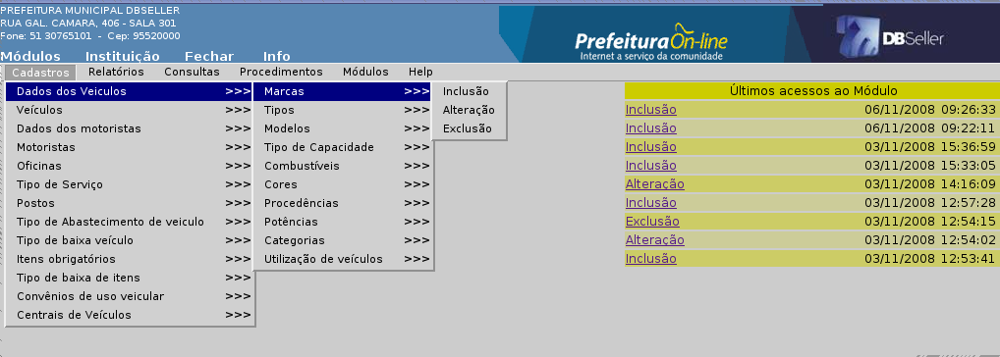
figura
1
Ao clicar no sub item de menu “incluir”, o usuário poderá cadastrar as marcas (fabricantes) dos veículos que fazem parte da frota Municipal. Ver figura 2
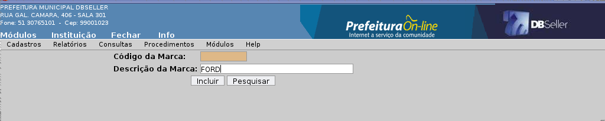
figura
2
A alteração das marcas (figura 3) poderá ser feita através do sub item de menu “alteração”.
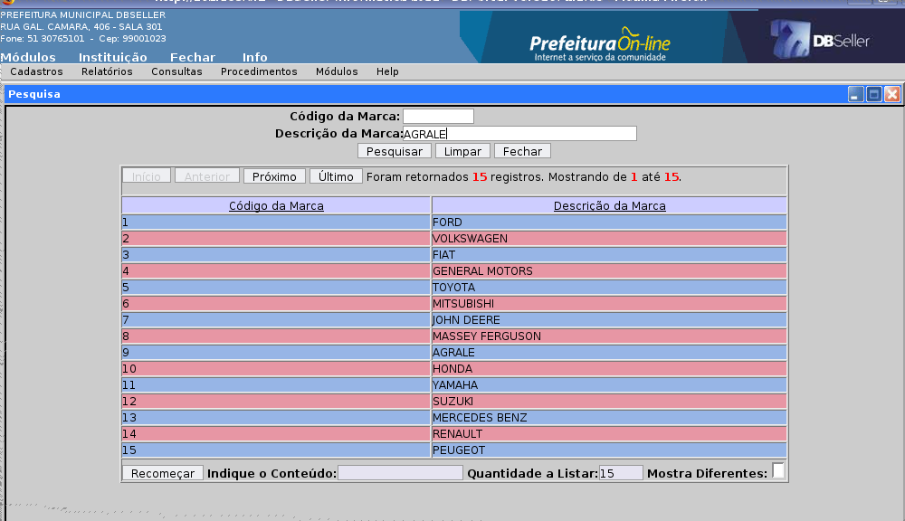
figura
3
Ao abrir esta tela, se verificará todos as marcas incluídas, sendo permitido então, a escolha de qualquer uma delas para fins alteração ou acrescimo de informações.
A exclusão das marcas poderá ser feita através do sub item de menu “exclusão”. De igual modo, neste caso de esclusão, a tela da figura 3, será novamente habilitada ao usuário, permitindo a escolha de qual marca excluir.
Ao clicar no sub item de menu “incluir”, o usuário poderá cadastrar os tipos (finalidade do automóvel por sua natureza. ex.:ônibus, camionete, pas/automóvel, micro-ônibus, ambulância e etc...) dos carros que fazem parte da frota Municipal. Ver figura 4:
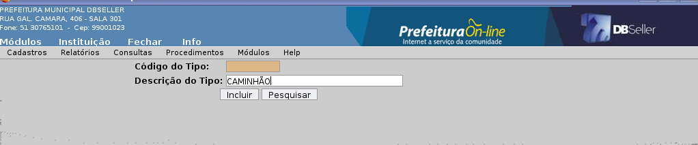
figura
4
A alteração dos tipos (figura 5), poderá ser feita através do sub item de menu “alteração”.
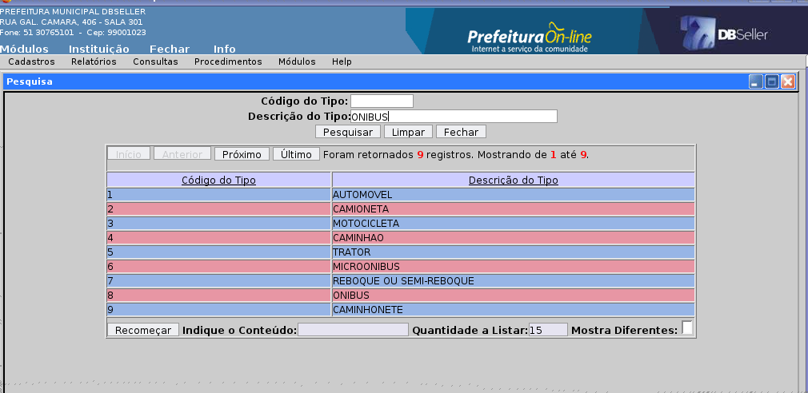
figura
5
Ao abrir esta tela, se verificará todos os tipos incluídos, sendo permitido então, a escolha de qualquer um deles para fins alteração ou acrescimo de informações.
A alteração dos tipos, poderá ser feita através do sub item de menu “alteração”. De igual modo, neste caso de esclusão, a tela da figura 5, será novamente habilitada ao usuário, permitindo a escolha de qual tipo excluir.
Ao clicar no sub item de menu “incluir”, o usuário poderá cadastrar os tipos (finalidade do automóvel por sua natureza. ex.:ônibus, camionete, pas/automóvel, micro-ônibus, ambulância e etc...) dos carros que fazem parte da frota Municipal. Ver figura 6:
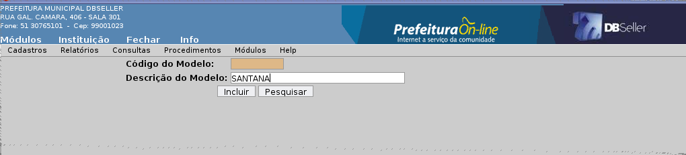
figura
6
A alteração dos modelos, poderá ser feita através do sub item de menu “alteração”.
A exclusão dos modelos, poderá ser feita através do sub item de menu “exclusão”.
Ao clicar no sub item de menu “incluir”, o usuário poderá cadastrar os tipos de capacidade dos veículos (ex.:carga, passageiro, passageiro/carga) que fazem parte da frota Municipal. Ver figura 7:
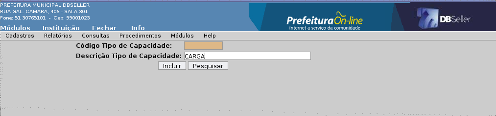
figura
7
A alteração dos tipos de capacidade, poderá ser feita através do sub item de menu “alteração”. Ver figura 8:
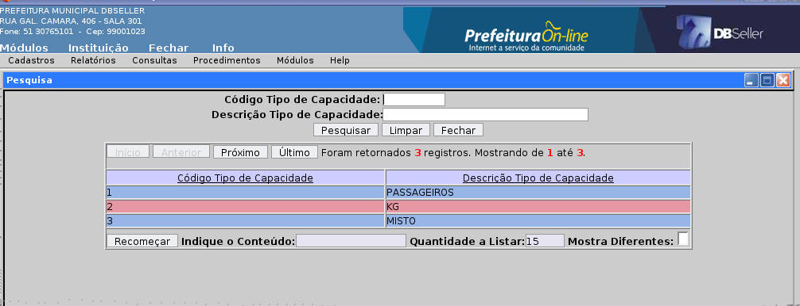
figura
8
Ao abrir esta tela, se verificará todos os tipos de capacidade incluídos, sendo permitido então, a escolha de qualquer um deles para fins alteração ou acrescimo de informações.
A exclusão dos tipos de capacidade, poderá ser feita através do sub item de menu “exclusão”. A mesma tela da figura 8 estará disponível ao usuário para consulta de qual item excluir.
Ao clicar no sub item de menu “incluir”, o usuário poderá cadastrar os tipos de capacidade de combustíveis dos veículos (ex.:gasolina, álcool, diesel e etc...) que fazem parte da frota Municipal. Ver figura 9:
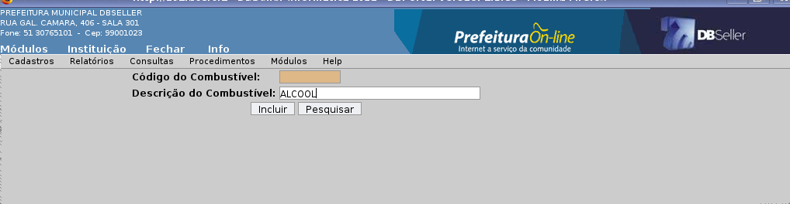
figura
9
A alteração dos combustíveis, poderá ser feita através dos sub item de menu “alteração”.
A exclusão dos tipos, poderá ser feita através do sub item de menu “exclusão”.
Ao clicar no sub item de menu “incluir”, o usuário poderá cadastrar as cores dos veículos que fazem parte da frota Municipal. Ver figura 10:
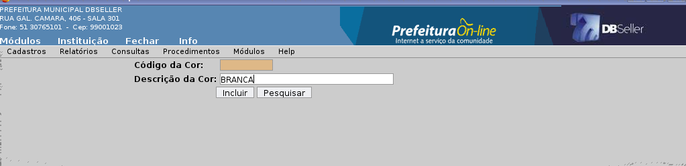
figura
10
A alteração das cores, poderá ser feita através dos sub item de menu “alteração”.
A exclusão das cores, poderá ser feita através dos sub item de menu “exclusão”.
Ao clicar no sub item de menu “incluir”, o usuário poderácadastrar a procedência dos veículos (ex.:nacional, ou importado) que fazem parte da frota Municipal. Ver figura 11:
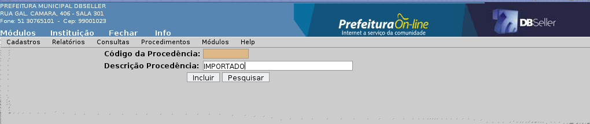
figura 11
A alteração da procedência, poderá ser feita através dos sub itens de menu “alteração”.
A exclusão da procedência, poderá ser feita através do sub item de menu “exclusão”.
Ao clicar no sub item de menu “incluir”, o usuário poderá cadastrara potência dos veículos (ex.:cilindradas, cavalos) que fazem parte da frota Municipal. Ver figura 12:
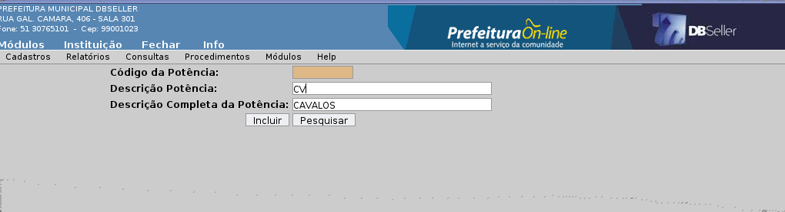figura 12
A alteração da potência, através do sub item de menu “alteração”. Para alterar bastará o usuário clicar sobre o item desejado e corrigir ou acrescentar informações conforme necessário.
A exclusão da potência, através do sub item de menu “exclusão”.
Ao clicar no sub item de menu “incluir”, o usuário poderá cadastrar as categorias dos veículos (ex.:oficial, e não-oficial...) que fazem parte da frota Municipal. Ver figura 13:
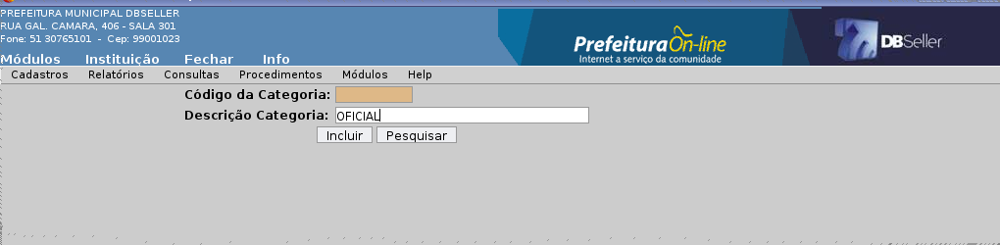
figura
13
A alteração das categorias, poderá ser feita através do sub item de menu “alteração”.
A exclusão das categorias, poderá ser feita através do sub item de menu “exclusão”.
Ao clicar no sub item de menu “incluir”, o usuário poderá cadastrar a utilização dos veículos (ex.:próprio, convênio, particular.) que fazem parte da frota Municipal. Ver figura 14:
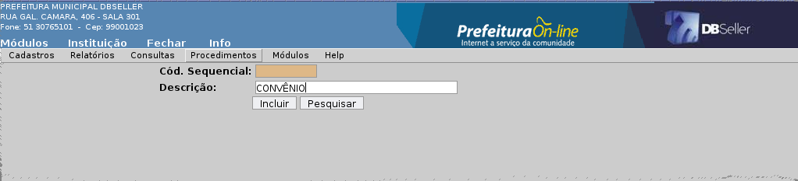
figura
14
A alteração da utilização dos veículos, poderá ser feita através do sub item de menu “alteração”.
A exclusão da utilização dos veículos, poderá ser feita através do sub item de menu “exclusão”.
O cadastro de veículos inclusão, traz quatro abas:
Dados do veículo;
Itens obrigatórios;
Utilização;
Central de veículos.
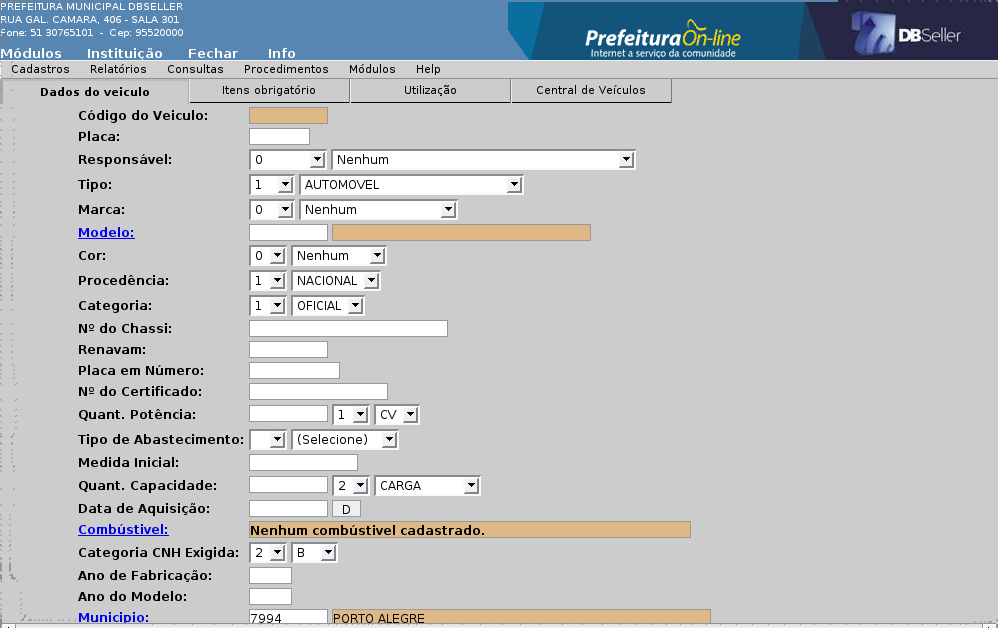
A
figura 15 traz a aba Dados do Veículo.
figura 15
Código do veículo: Este código é gerado automáticamente pelo sistema.
Placa: Neste campo é informado a placa do veículo.
Responsável: Neste campo informa-se o nome do motorista responsável pelo veículo que está sendo cadastrado.
Tipo: Neste campo será informado o tipo do veículo, especificando-o por sua utilidade.
Marca: Neste campo será informado a marca do veículo(fabricante)
Modelo: Neste campo ao clicar no link “modelo”, se apontará o modelo do veículo.
Cor: Neste campo será informado a cor do veículo.
Procedência: Neste campo será informado a procedẽncia (nacional ou importado) do veículo.
Categoria: Neste campo será informado a categoria ( oficial ou não-oficial ).
Numero do chassi: Neste campo será informado o numero do chassi do veículo cadastrado (esta informação se encontra no certificado de registro do veículo).
Renavam: Neste campo será informado o número do renavam do veículo cadastrado (esta informação se encontra no certificado de registro do veículo).
Placa em números: Neste campo será informado as letras e os números da placa do veículo em dígitos.
Número do certificado: Neste campo será informado o número do certificado de registro e licenciamento do veículo (esta informação se encontra no certificado de registro do veículo).
Quantidade potência: Neste campo será informado a potência do motor do veículo cadastrado (esta informação se encontra no certificado de registro do veículo).
Tipos de abastecimento: Neste campo será informado o tipo de controle para consumo de abstecimento do veículo, ou seja, hodômetro ou horímetro.
Medida inicial: Neste campo será informado a medida do hodômetro ou horímetro ( conforme determinação de cada localidade ) inicial com a qual o veículo ingressa na frota da instituição.
Quantidade capacidade: Neste campo será informado o limite da capacidade do veículo, conforme as unidades cadastradas no menú “Dados do veículo – Tipos de capacidade”, segundo o propósito do veículo, ou seja, se for um veículo de carga medida em toneladas, se informará a opção carga/tonelada e mais a quantidade de toneladas suportada por este veículo.
Data de aquisição: Neste campo será informado a data em que foi adquirido o veículo.
Combustível: Clicando sobre este link, uma tela contendo os combustíveis usados na frota municipal se abrirá apresentando o nome do combustível com o seu respectivo código, que por sua vez deverá ser informado neste campo.
Categoria CNH exigida: Neste campo deverá ser informado, a categoria da carteira nacional de habilitação, que o motorista responsável pelo veículo deve ter para guiar este veículo.
Ano de fabricação: Neste campo será informado tão somente o ano de fabricação do veículo.
Ano de modelo: Neste campo será informado tão somente o ano do modelo do veículo.
Município: Neste campo será informado o município onde o veículo passará a ser utilizado, consequentemente de onde tem seu emplacamento vigente.
O processo de inclusão nesta aba encerra-se ao clicar no botão Incluir.
A figura 16 traz a aba Itens obrigatórios:
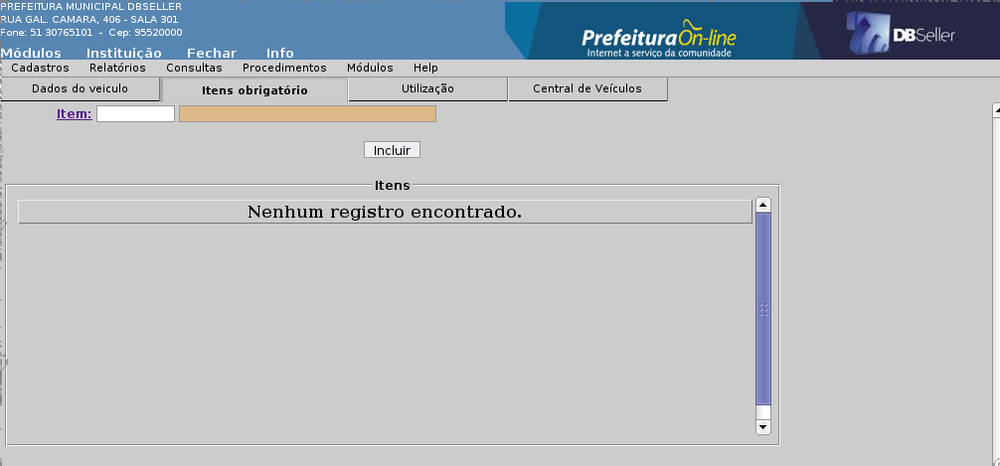
figura
16
Nesta tela serão informados os itens obrigatórios que cada veículo terá, e para tanto, basta clicar no link “itens”, e uma tela contendo os itens obrigatórios (itens cadastrados no cadastro-itens obrigatórios) de toda frota se abrirá, permitindo-se escolher o iten desejado, que uma vez escolhido, aparecerá descrito com seu código no campo em laranja,conforme figura acima, necessitando logo a seguir de confirmar a inclusão clicando-se no botão incluir.
Uma vez feito isto, o item aparecerá no quadro Itens , onde se poderá conferir o item obrigatório incluído. sendo permitido a partir de então nova operação de inclusão de mais itens obrigatórios neste veículo.
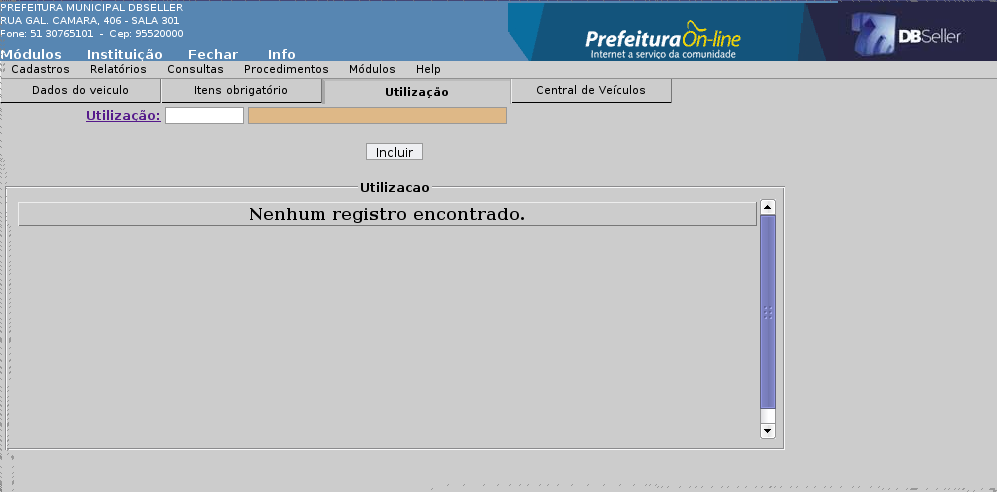
A
figura 17 traz a aba utilização:
figura 17
Nesta tela será informado a utilização que cada veículo terá, e para tanto, basta clicar no link “utilização”, e uma tela contendo as opções de utilização do veículo (itens cadastrados no cadastro-dados do veículo-utilização de veículos) de toda frota se abrirá, permitindo escolher a opção desejada, que uma vez escolhida, aparecerá descrita com seu código no campo em laranja, conforme figura acima, necessitando logo a seguir de confirmar a inclusão clicando-se no botão incluir. Uma vez feito isto, o item aparecerá no quadro Itens ( localizado logo abaixo do botão incluir), onde se poderá conferir a utilização incluída.
A figura 18 traz a aba central de veículos:
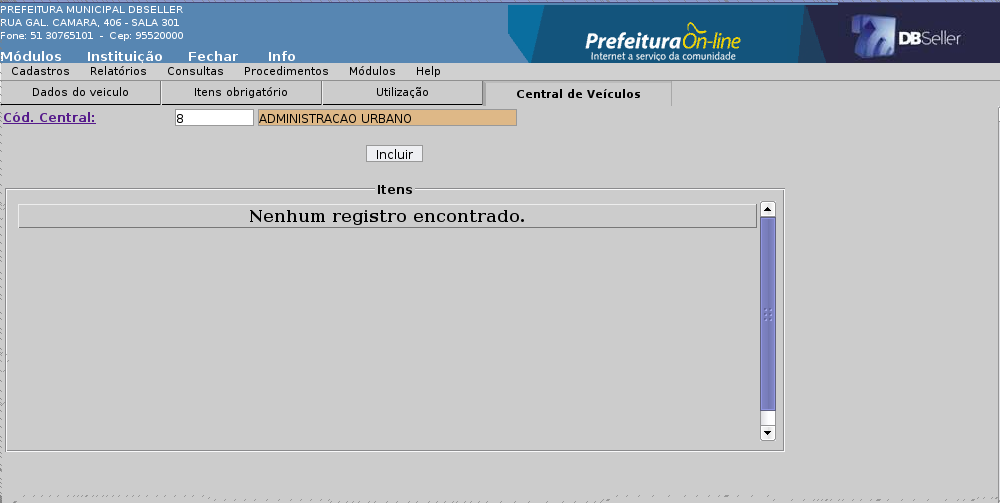
figura
18
Nesta tela será informada a central de veículos a que pertence o veículo cadastrado ( Esta informação é inicialmente dada no menú “Cadastros-Central de Veículos”). Clicando no link Cód Central uma tela de pesquisa se abrirá, contendo as centrais de veículos cadastradas no sitema. Ao clicar no botão “incluir” encerra-se o processo de inclusão do menu Veículos.
A alteração de qualquer informação contida em qualquer aba deste menu, poderá ser feita clicando-se no sub-menu Alterar.
A exclusão de qualquer informação contida em qualquer aba deste menu, poderá ser feita clicando-se no sub-menu Exclusão.
Neste cadastro o usuário poderá incluir uma nova categoria de habilitação. Ao se abrir a tela de inclusão, no campo “Descrição categoria CNH” será informado a categoria de CNH, feito isto, o processo de inclusão encerra-se ao clicar no botão “Incluir “. Ver figura 19:
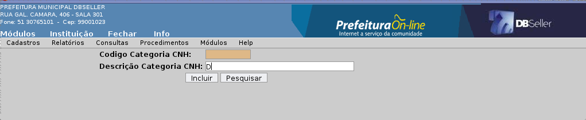
figura
19
Ao clicar-se no sub-menu “ Alteração “, se abrirá uma tela de pesquisa, onde estarão relacionadas todas as categorias incluídas, após a escolha de qual item se deseja alterar, o processo de alteração é concluído, clicando-se no botão “ alterar “ .
Ao clicar-se no sub-menu “exclusão “, se abrirá uma tela de pesquisa, onde estarão relacionadas todas as categorias incluídas, após a escolha de qual item se deseja excluir, o processo de alteração é concluído, clicando-se no botão “ excluir“.
Clicando no sub-menu “ incluir “, esta tela permitirá incluir as possíveis situações em que se encontram os condutores dos veículos em relação a atividade no serviço. Um exemplo de situação poderá ser : ativo ou inativo. além destas outras especificações poderão ser incluídas. Ver figura 20:
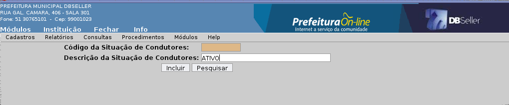
figura
20
O sub-menu Alterar permitirá a mudança da nomenclatura de situação dos condutores.
Já o sub-menu Exluir, permite excluir determinada situação que não se queira mais usar para nenhum condutor.
Ao clicar no menú incluir, surege na tela duas abas: Dados do motorista e Central de abastecimento.
A figura 21 traz a aba Dados do motorista.
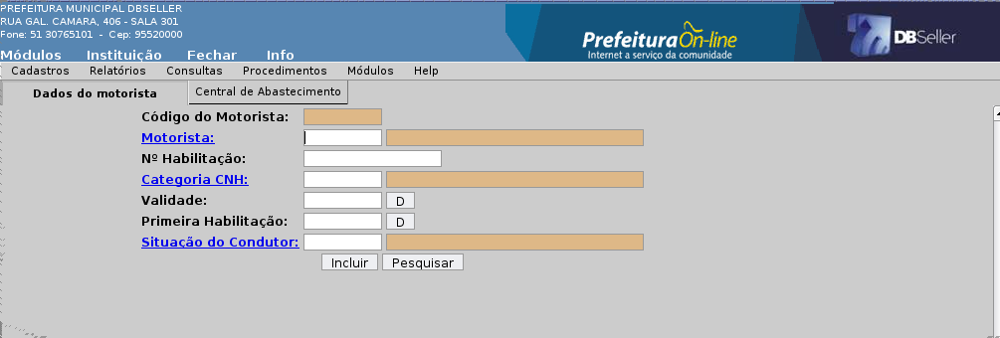
figura 21
Código do motorista:Este código é gerado automáticamente pelo sistema.
Motorista: Este link uma vez clicado, abre uma tela de pesquisa onde é apresentado a lista do Cadastro Geral do Município (CGM), que por sua vez permite ao usuário escolher o nome do motorista que deseja.
Nº habilitação: Neste campo será informado o número da carteira de habilitação (CNH) do motorista escolhido no campo anterior.
Categoria CNH : Este link uma vez clicado abre uma tela onde se apresenta todas as opções possíveis de categorias de habilitação.
Validade: Este campo traz a opção de o usuário escolher se prefere digitar a data de válidade da CNH do motorista cadastrado, ou clicando na janela a direita do campo em cima da letra ” D “ se abririá o calendário onde o usuário poderá clicar sobre a data de validade e esta se transpõe ao campo 'validade'.
Primeira habilitação: Este campo traz a opção de o usuário escolher se prefere digitar a data da primeira CNH do motorista cadastrado, ou clicando na janela a direita do campo em cima da letra ” D “ se abririá o calendário onde o usuário poderá clicar sobre a data de validade e esta se transpõe ao campo 'validade'.
Situação do condutor: Este link uma clicado, abre uma tela onde será possível informar em que situação se encontra o motorista cadastrado (ativo / ou inativo ).
O botão pesquisar traz a lista dos motoristas cadastrados.
O processo segue clicando no botão “ incluir “.
A figura 22 traz a aba Central de abastecimento.
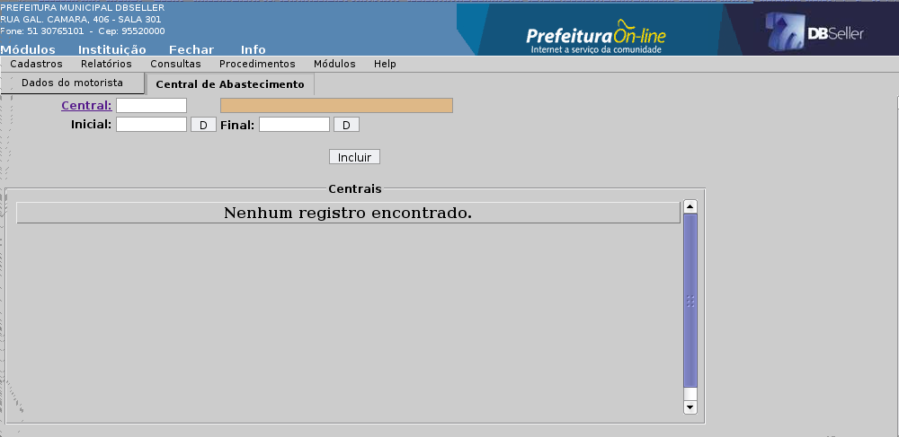
figura 22
Central: Este link traz todas as centrais cadastradas no menú “centrais de abstecimento”. Com esta informação, fica especificado a que central este motorista esta ligado.
Os campos de datas contidos nesta aba, existem em função da data inicial que determinado motorista passou a fazer parte desta central e a data limite (final) que está determinada para que ele faça parte desta central. É válido dizer que o campo Data final é opcional, pois se o motorista que está sendo cadastrado para esta central não tem previsão de deixar os serviço da mesma, não é necessário que o campo “Data final” seja preenchido.
Cada central a que o motorista for ligado após clicar no botão incluir, passará a ser exibida nesta mesma tela, logo abaixo na caixa “centrais”.
Este processo se encerra clicando no botão “incluir”.
A alteração destes dados será possível clicando no sub-menu “alterar”, ao fazẽ-lo o Cadastro geral do Municípío será aberto e o item apontado poderá ser alterado, tanto na aba Dados do Motorista, quanto na aba Central de abastecimento. Na aba “ Central de abastecimento” a alteração para ser realizada deverá ser indicada entre as centrais ali disponíveis na caixa “centrais”, clicando-se no “A” de “alterar” a direita do nome da central, assim uma vez veito isto, a lateração será consumada quando os dados forem confirmados clicando-se no botão “alterar”.
A exclusão dos dados deste menú “motoristas”, é feita no sub menú exclusão.
Código da oficina: Este campo é preeenchido automáticamente pelo sistema.
Oficina: Este link traz o cadastro geral do município, uma vez clicado sobre o nome desejado, o campo é preenchido e o processo pode ser encerrado clicanod-se no botão “incluir”.Ver figura 23:
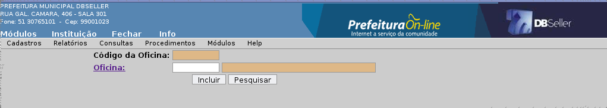
figura
23
A alteração destes dados poderá ser feito clicando-se no sub-menu alteração .
A exclusão destes dados poderá ser feito clicando-se no sub-menu exclusão .
Este menu é destinado a registrar os tipos de serviços relacionados a manutenção dos veículos da frota Municipal, todo o serviço poderá ser registrado de forma genérica ( eletrica, geometria, mecânica, eletrônica, e etc...).
Código de tipo de serviço: Este campo é preenchido automáticamente pelo sistema.
Descrição do tipo de serviço: Neste campo deverá ser informado o tipo de serviço ao qual os veículos poderão ser submetidos.
O botão pesquisar uma vez clicado, traz a tela cotendo todos os tipos de serviços já cadastrados.
Uma vez todos os campos preenchidos, o processo encerra-se clicando-se no botão “incluir”.
Ver figura 24.
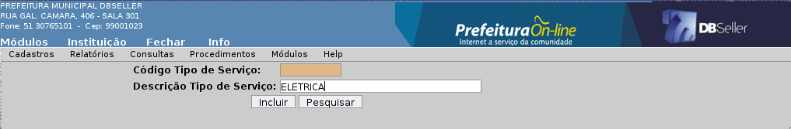
figura
24
A alteração do tipo de serviço poderá ser feita clicando-se no sub-menu alteração.
A exclusão do tipo de serviço poderá ser feita clicando-se no sub-menu exclusão.
Código do posto: Este campo é preenchido automáticamente pelo sistema.
Tipo: Este campo deve ser preenchido clicando-se na seta ao lado do campo, este campo dá conta se o posto a ser cadastrado é interno ou externo. Se o tipo escolhido for “interno” ao clicar no link “depart:” a lista trazida por este link será a lista de departamentos cadastrados no módulo configurações, se o tipo escolhido for “externo” ao clicar no link “depart:” a lista trazida por este será o Cadastro Geral do Município. Ver figura 25:
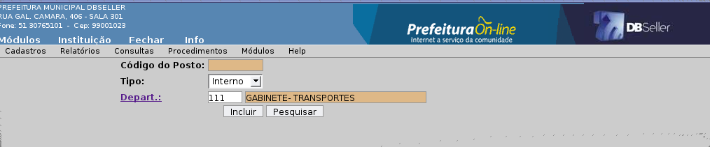
figura 25
O processo de inclusão termina ao clicar no botão “incluir”.
A alteração poderá ser efetuada ao se clicar no sub-menu alteração.
A exclusão poderá ser efetuada ao se clicar no sub-menu exclusão.
Código seqüêncial: Este campo será preenchido automáticamente pelo sistema.
Descrição: Neste campo deverá ser informado a forma de controle de abstecimento dos veículos da frota Municipal, nele basicamente será informado se o controle será feito através do hodômetro ou pelo horímetro.
Sigla: Neste campo deverá ser informado nada mais do que a abreviação da forma de controle de abastecimento escolhida para os abstecimentos dos veículos.
O campo pesquisar uma vez acionado trará a lista das formas de controle de abastecimentos cadastradas no sistema. Ver figura 26:
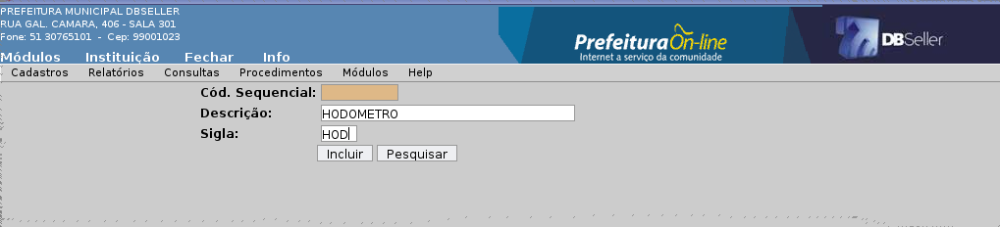
figura
26
O processo se encerra ao clicar no botão incluir.
A alteração poderá ser feita através do sub-menu alteração.
A exclusão poderá ser efetuada ao se clicar no sub-menu alteração.
Neste cadastro será informado as possíveis formas de baixa que os veículos da frota Municipal poderão ocorrer ( roubo, furto, sinistro, doação, alienação...).
Cód seqüencial: Este campo será preenchido automáticamente pelo sistema.
Descrição: Neste campo serão informados os tipos de baixas que os veículos poderão sofrer. Ver figura 27:
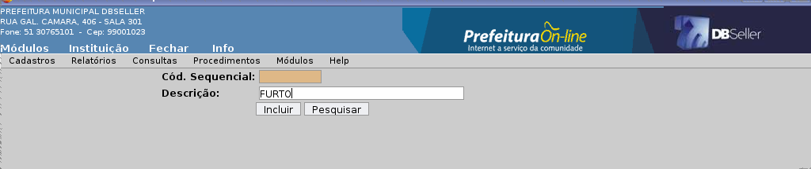figura 27
O processo se encerra ao clicar no botão “incluir”.
A alteração será possível clicando-se no sub-menu alteração.
A exclusão será possível clicando-se no sub-menu exclusão.
O botão pesquisar, uma vez clicado trará a lista de motivos de baixas cadastrados no sistema.
Cód seqüêncial: Este campo é preenchido automáticamente pelo sistema.
Descrição: Neste campo será informado o objeto que acompanhará obrigatóriamente cada veículo, ex:cinto de segurança; macaco; estepe; triângulo; e etc...
Observações: Este campo, não obrigatório, servirá para acrescentar informações específicas sobre o item que se está cadastrando.
Ver figura 28
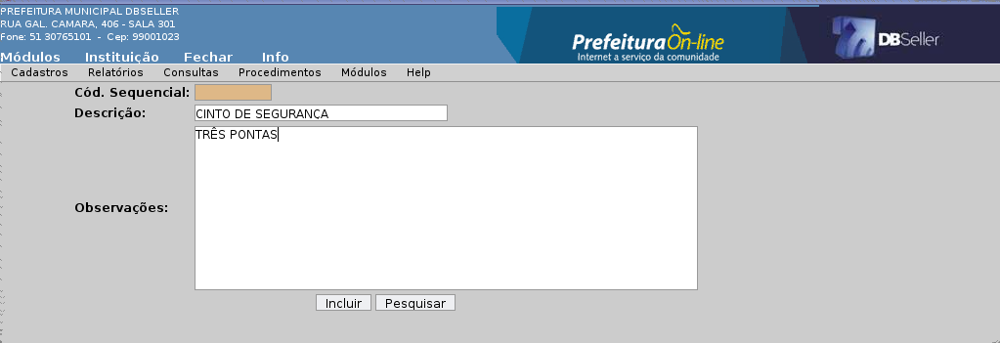
figura
28
O botão pesquisar, uma vez clicado, apresentará todos os itens obrigatórios já cadastrados no sistema.
O processo encerra-se ao clicar no botão “incluir“.
A alteração de qualquer ítem obrigatório será possível clicando no sub-menu alterar, ao fazê-lo, a tela onde se armazena todos os itens obrigatórios já cadastrados se abrirá, e ao apontar o item desejado, este aparecerá na tela de alteração, permitindo então alterar os dados e confirma-loslogo a seguir clicando no botão “alterar”.
A exclusão de qualquer item segue os mesmos moldes da alteração, lógicamente que, clicando-se no sub-menu excluir e posteriormente confirmando a exclusão no botão excluir.
Semelhante ao cadastro de “tipo de baixa de veículos”, este cadastro atenderá o controle de baixa dos itens obrigatórios relacionados aos veículos da frota Municipal, especificando o tipo de baixa (roubo, estravio,dano, e etc...) pelo qual o item sofreu a baixa.
A inclusão dos motivos de baixa:
Código sequêncial: Este campo será preenchido automáticamente pelo sistema.
Descrição: Neste campo será informado a descrição do motivo de baixa dos veículos. Ver figura 29:
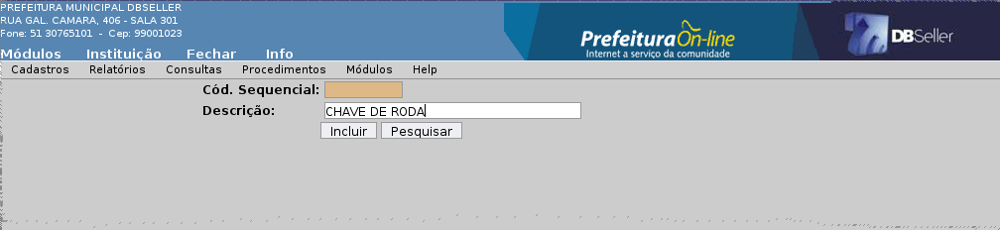
figura
29
O botão de pesquisar trará a tela contendo todos os tipos de baixa de itens já cadastrados no sistema.
O processo encerra-se clicando no botão “incluir”.
Será possível alterar os tipos de baixa dos itens clicando-se no sub-menu alteração.
Será possível alterar os tipos de baixa dos itens clicando-se no sub-menu alteração.
Neste cadastro será informado o nome das pessoas jurídicas ou físicas com quem a Prefeitura mantem contrato de convênio para uso veicular.
Código sequêncial: Este campo será automáticamente preenchido pelo sistema.
Descrição: Neste campo será informado o nome da instituição ou pessoa física com quem está se firmando contrato de uso veicular.
CGM: Este link é destinado a fazer a ligação do nome colocado no campo “Descrição” com a sua inscrição no CGM (Cadastro Geral do Município).
Observações: Este campo de uso não obrigatório, serve para adicionar alguma observação em relação a alguma das partes envolvidas no convênio cadastrado.
O botão pesquisar, uma vez clicado, apresentará todos os nomes já cadastrados com quem a Prefeitura mantem contrato de convênio de uso veicular. Ver figura 30:
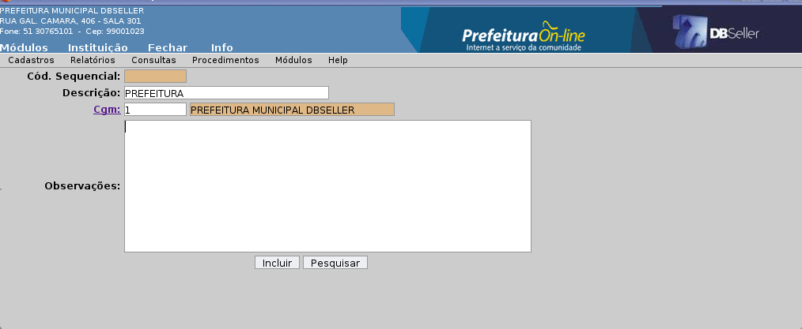
figura
30
O processo encerra-se clicando no botão “incluir”.
Será possível alterar os convênios de uso veiculares clicando-se no sub-menu alterar.
Será possível excluir os convênios de uso veiculares clicando-se no sub-menu exclusão.
O cadastro Centrais de veículos tras quatro abas:
Dados da Central;
Departamentos;
Motoristas;
Veículos.
A figura 31 traz a aba Dados do Central
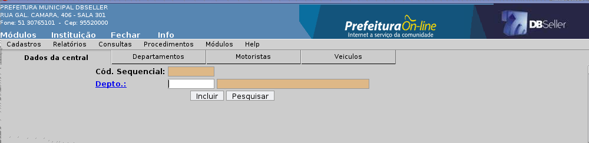
figura
31
Código sequêncial: Este campo é preenchido automáticamente pelo sistema.
Depto: Este link uma vez clicado abriará uma tela de pesquisa onde se terá a relação dos departamentos cadastrados no módulo configurações.
O botão “pesquisar” traz somente os departamentos cadastrados como centrais.
O processo segue clicando no botão incluir.
A figura 32 traz a aba Departamentos
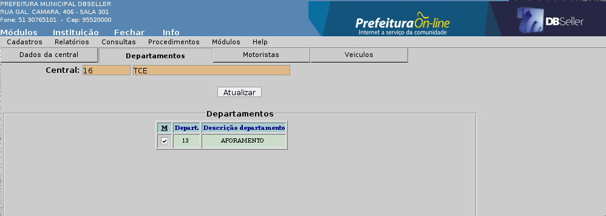
figura
32
Nesta tela, o campo “Central” já vem preenchido com os dados da primira aba, restando apenas marcar os departamentos que ficarão ligados a esta central.
O processo segue clicando no botão “atualizar”.
A figura 33 traz a aba Motoristas
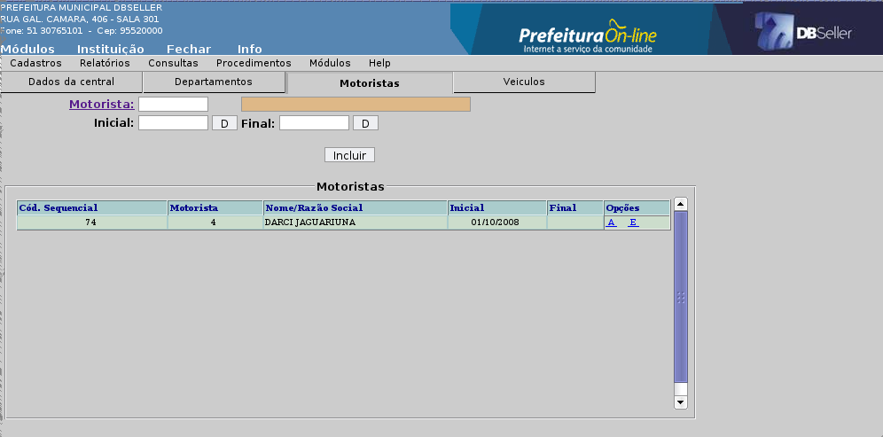
figura
33
Motoristas: Este campo traz a lista de todos os motoristas cadastrados no sistema. Os campos de datas “inicial” e “final”, tanto podem serem preenchidos manualmente como podem ser preenchidos pelo calendário, clicando nos ícones “D”.
O campo data final é um campo opcional, se ele for preenchido, o motorista relacionado terá uma data limite para fazer parte daquela central de veículos, caso este campo não seja preenchido o motorista relacionado terá sua permanência por tempo indefinido naquela central. Todos os motoristas que forem incluídos serão lançados na caixa logo abaixo chamada Motoristas.
O processo segue clicando no botão “incluir”.
A figura 34 traz a aba Veículos.
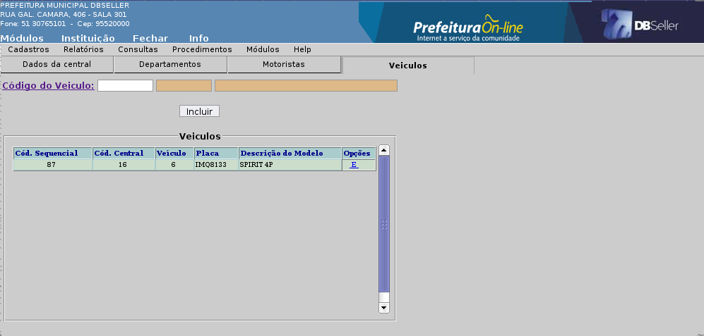
figura
34
Código do veículo: Neste link, tem-se a relação dos carros cadastrados na Frota Muncipal, uma vez escolhido o veículo aparecerá descrito neste campo com seu respectivo código, restando apenas confirmar o veículo clicando no botão incluir.
Todos os veículos cadastrados nesta central, aparecerão relacionados dentro da caixa Veículos, sendo nesta também permitido a Exclusão do veículo, clicando na letra “E” dentro da coluna “opções”.
A alteração serão permitidas através do sub-menu alteração.
A exclusão serão permitidas através do sub-menu exclusão.
Este relatório traz a lista dos veículos cadastrados no sistema.
Este relatório traz a lista de motoristas cadastrados no sistema.
Este relatório traz a lista das oficinas cadastradas no sistema.
Este relatório traz a lista dos postos cadastrados no sistema.
Este relatório traz a lista dos modelos cadastrados no sistema.
Este relatório traz a lista das marcas cadastradas no sistema.
Este relatório traz a relação das categorias cadastradas no sistema.
Este relatório traz a relação das categorias de CNH cadastradas no sistema.
Este relatório traz a relação dos combustíveis cadastrados.
Este relatório traz a lista dos tipos de capacidade cadastrados no sistema.
Este relatório traz a relação dos serviços de manutenção cadastrados no sistema aos quais os veículos da frota Municipal são submetidos.
Este relatório traz a relação dos tipos de veículos cadastrados no sistema.
Este relatório traz a lista das procedências dos veículos.
Este relatório traz a lista das cores dos carros cadastrados no sistema.
Este relatório traz a relação das potências cadastradas no sistema.
Este relatório traz a lista das possibilidades de situação dos motorista em que os motoristas podem ser classificados.
Este relatório traz a lista dos abastecimentos que cada veículo fez, com as datas, consumos, quilometragens, e demais informações.
A figura 35 traz a tela de filtros para a emissão deste relatório.
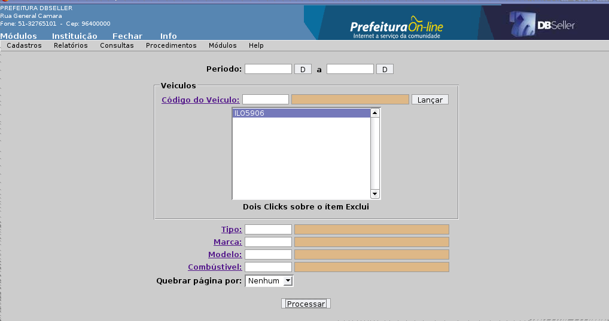
figura 35
Período: Este campo possibilita ao usuário emitir um relatório de abastecimento limitado a um determinado período de tempo, clicando para tanto nos calendários disponiblizados pelos campos “D”. Este campo é opcional, se o usuário não preenche-lo, o relatório trará toda a história de abastecimento do veículo indicado pelo usuário.
Código do veículo: Este link, uma vez clicado trará todos os veículos cadastrados no sistema, através dele será indicado o veículo do qual será emitido o relatório. Uma vez que este campo estiver preenchido, o usuário deverá clicar no botão “lançar”, o que fará com que o veículo seja lançado para dentro da caixa localizada logo abaixo, após feito isto, se o usuário não desejar especificar maiores detalhes, poderá clicar no botão “processar”.
Dos filtros a seguir, apenas um deve ser escolhido se o usuário desejar especificar sua pesquisa.
Tipo: Este link traz todos os tipos de veículos cadastrados, possibilitando especificar o relatório a ser processado.
Marca: Este link traz todas as marcas cadastradas no sistema, possibilitando especificar o relatório a ser processado.
Modelo: Este link traz todos os modelos cadastrados no sistema, possibilitando especificar o relatório a ser processado.
Combustível: Este link traz todos os combustíveis cadastrados no sistema, possibilitando especificar o relatório a ser processado.
Feito isto logo a seguir se assim o desejar já será possível processar o relatório clicando no botão “Processar”.
Quebra por página: Este campo permite ao usuário escolher como se dará a quebra de página, se esta será por modelo, marca, tipo ou combustível
O relatório é processado clicando-se no botão “procesar”. Como pode ser obsevado na figura 36.
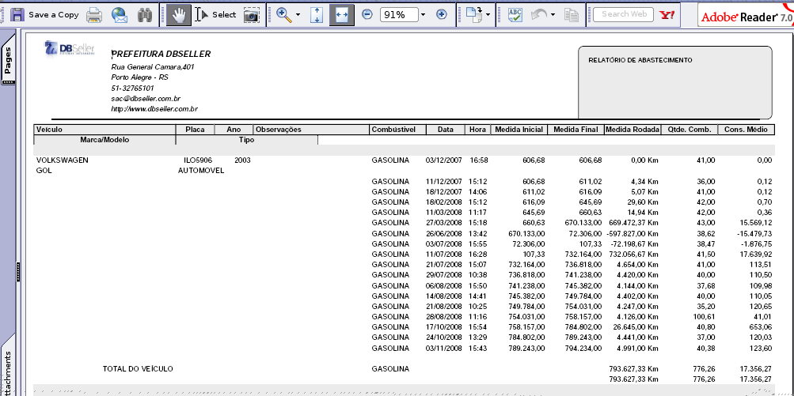
figura
36
Este relatório informa ao usuário quais as centrais de veículos que a instituição dispõe, nele também é informado o código de cada veículo, bem como a placa, tipo de veículo, modelo, marca, e ano de fabricação, também informa se o carro sofreu baixa ou não. Além disso, informa os motoristas com seus códigos, carteiras de habilitação, validade da carteira, e ainda se o motorista encontra-se ativo ou não.
A figura 37 traz os seguintes filtros: central, quebra por página.
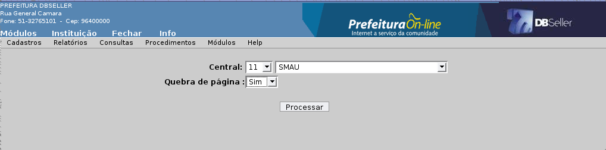
figura
37
Central: Este campo permite ao usuário escolher ou conhecer as centrais de veículos que deseja verificar. Esta consulta poderá ser feita estando o usuário logado em qualquer departamento.
Quebra por página: Este campo permitirá ao usuário no momento de imprimir o relatório, escolher se o relatório apresentará as informações de forma contínua ou se fará a quebra de página das informações por central.
O relatório poderá ser gerado clicando-se no botão Processar. Como podemos observar na figura 38 e 39.
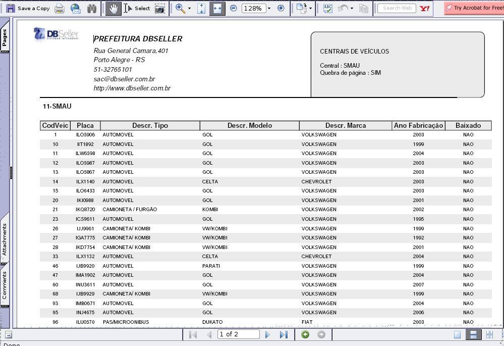
figura 38
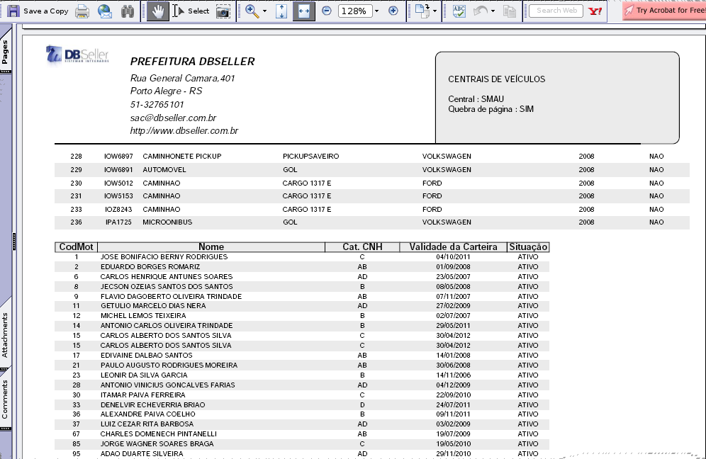
figura 39
Ao abrir a tela de consulta surgirá o link “código do veículo”, que, ao ser escolhido e logo a seguir clicando no botão “processar”, abrirá uma tela contendo informações sobre o veículo apontado,restando apenas consultar os seguintes botões:
Veículos: Esta consulta traz quaro abas: Retiradas, abastecimentos, Manutenções e Relatórios.
Retiradas: Este botão uma vez clicado trará a lista de todas as retiradas deste veículo escolhido.
Abastecimentos: Este botão trará todos os registros dos abastecimentos do veículo escolhido.
Manutenções: Este botão trará a lista de todas as manutenções que foram realizadas no veículo escolhido.
Relatórios: Este botão trará um relatório completo do veículo escolhido, contendo nele todas as dos botões anteriores.
Tipo padrão: Este link abre a tela de pesquisa “tipos de veículos” , a qual o usuário pode definir o tipo de veículo que aparecerá por padrão nas telas onde esta informação for solicitada.
Categoria CNH exigida: Este link abre a tela de pesquisa das categorias de CNH e permite ao usuário escolher a categoria padrão apresentada nas telas onde esta informação for solicitada.
Integrado com patrimônio: Este campo permite ao usuário escolher se haverá relação entre os veículos e os bens patrimoniais que eles representam.
Integrado com módulo pessoal: Este campo permite ao sistema controlar o cadastro de motoristas através da lista dos funcionários ativos ou do cadastro geral do Município.
Qualquer alteração necessária nestes parâmetros deve ser confirmada no botão “alterar”.
Inclusão: Ao clicar no sub-menu “incluir”, se abrirá uma tela contendo todos os carros da central em que o usuário estiver logado, permitindo o mesmo. escolher o carro a ser dado baixa.
Uma vez feito isto, se abrirá uma tela conforme a figura 40:
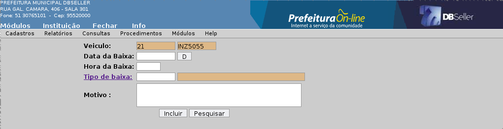
figura
40
Veículo: Este campo é preenchido no momento em que o usuário escolhe o carro a ser dado baixa.
Data da baixa: clicando-se no campo “D”, a data da baixa poderá ser escolhida através do calendário, ou simplesmente digitando a data neste campo.
Hora da baixa: Neste campo é digitado a hora da baixa do veículo.
Tipo da baixa: Este link traz os dados cadastrados no sub-menu tipo de cadastro na guia cadastros.
Motivo: Neste campo será descrito o motivo pelo qual o veículo está dando baixa.
O processo encerra-se clicando-se no botão “incluir”.
A alteração não é contemplada neste menu.
A exclusão poderá ser feita clicando-se no sub-menu excluir, esta tela tem os mesmos campos da tela de inclusão. Este processo encerra-se clicando-se no botão “excluir”.
A figura 41 apresenta esta tela com suas duas abas: Manutenção e itens.
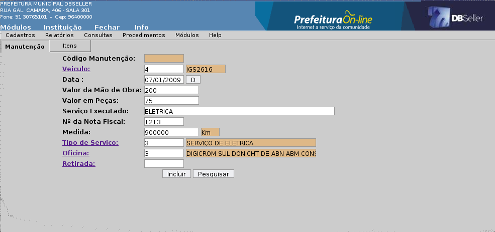
figura 41
Código Manutenção: Este campo é preenchido automáticamente pelo sistema.
Veículos: Este link abre uma tela de pesquisa onde estão todos os veículos cadastrados no sistema.
Data: Neste campo é informado a data em que foi feita a manutenção.
Valor da mão de obra: Neste campo é informado o valor do serviço de manutenção executado no veículo.
Serviço executado: Neste campo é informado o serviço executado.
Nº da nota fiscal: Neste campo é informado o número da nota do serviço executado.
Medida: Neste campo é informado a medida do hodômetro no momento da execução da manutenção.
Tipos de serviços: Este link permite ao usuário informar o serviço de manutenção ao qual o veículo foi submetido.
Oficina: Este link permite ao usuário informar a oficina responsável pela execução do serviço de manutenção solicitado.
Retirada: Este link permite ao usuário vincular a retirada ao serviço de manutenção realizado.
O processo segue clicando no botão “ incluir “.
A figura 42 traz a aba Itens.
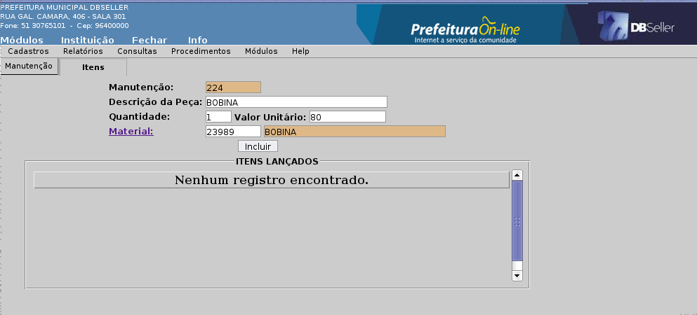
figura 42
Manutenção: Este campo é preenchido automáticamente pelo sistema.
Descrição da peça: Neste campo é informado o nome das peças que foram necessárias para a manutenção realizada.
Quantidade: Neste campo é informado a quantidade dos tipos de peças solicitadas para a manutenção do veículo.
Valor unitário: Neste campo será informado o valor unitário de cada peça informada.
Material: Este link permitirá ao usuário vincular a peça solicitada ao cadastro de materiais.
A alteração poderá ser executada ao clicar no sub-menu alteração.
A exclusão poderá ser executada ao clicar no sub-menu exclusão.
O processo encerra-se ao clicar no botão “Incluir”.
Ao clicar no sub-menu “Incluir”, uma tela de pesquisa com os veículos cadastrados na central onde se está logado se abrirá, permitindo a escolha do veículo para proceder a retirada.
Código Retirada: Este campo é preenchido automáticamente pelo sistema.
Veículo: Este link é preenchido com o veículo informado na primeira tela logo após se ter clicado no sub-menu “incluir”.
Motorista: Este campo traz a lista de todos os motoristas cadastrados no sistema.
Data retirada: Neste campo será informado a data em que se está fazendo a retirada do veículo.
Hora da retirada: Neste campo será informado a hora da retirada do veículo.
Última devolução: Neste campo será informado a última medida do hodômetro no momento da devolução do veículo.
Medida de saída: Neste campo será informado a medida do hodômetro no momento da saída do veículo.
Destino: Neste campo será informado o destino ao qual o veículo se deslocará nesta retirada.
Ver figura 43:
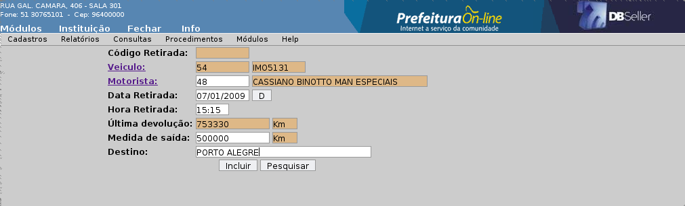
figura
43
O procedimento encerra-se clicando no botão incluir.
A alteração da retirada de veículos poderá ser feita clicando-se no sub-menu alteração.
A exclusão da retirada de veículos poderá ser feita clicando-se no sub-menu exclusão.
Ao clicar no sub-menu “Incluir”, uma tela de pesquisa com os veículos cadastrados na central onde se está logado se abrirá, permitindo a escolha do veículo para proceder a devolução.
Código devolução: Este campo é preenchido automáticamente pelo sistema.
Código retirada: Este link trará todos os veículos que ainda nãoforam devolvidos, permitindo ao usuário então, escolher a qual veículo proceder devolução. Uma vez escolhido o veículo, os campos: veículo, data retirada, hora retirada, medida de saída, motorista, serão preenchidos automáticamente. Restando apenas o preenchimento dos seguintes campos:
Data da devolução: Neste campo será informado a data da devolução do veículo.
Hora da devolução: Neste campo é informado a hora da devolução do veículo.
Medida da devolução: Neste campo é informado a medida do hodômetro no momento da devolução do veículo.
Ver figura 44.
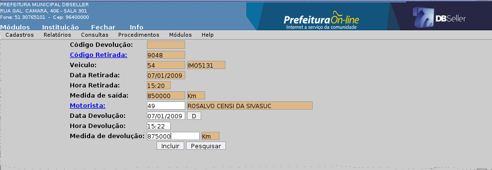
figura
44
A alteração será possível através do sub-menu alteração.
A exclusão será possível através do sub-menu exclusão.
Código abastecimento: Este código é preenchido automáticamente pelo sistema.
Veículo: Este link trará todos os carros cadastrados na central onde se estiver logado, permitindo ao usuário escolher qual o carro a ser abastecido.
Combustível: Este link trará todos os combustíveis cadastrados no sistema, permitindo então ao usuário informar qual o combustível o veículo recebeu.
Data do abastecimento: Neste campo informa-se a data em que o veículo foi abastecido.
Litros: Neste campo é informado a quantidade de litros abastecido no veículo.
Medida de consumo: Neste campo é informado a medida do hodômetro no momento do abastecimento.
Retirada: Este link trará uma tabela contendo todas as retiradas de veículos desta central de veículos.
Posto: Este link traz os postos cadastrados no sistema.
Ver figura 45.
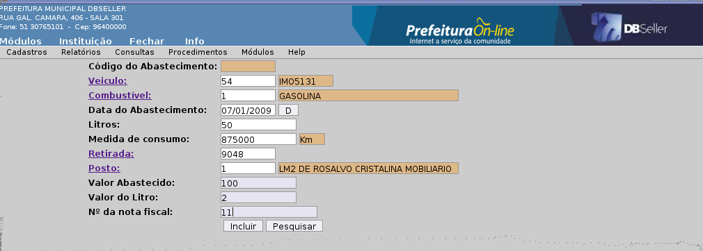figura 45
'O processo encerra-se clicando no botão incluir.
A alteração será possível clicando no sub-menu alteração.
A exclusão será possível clicando no sub-menu exclusão.
Cód sequêncial: Este campo é preenchido automáticamente pelo sistema.
Tipo de baixa: Este link trará todas as alternativas de baixa cadastradas no sistema, permitindo ao usuário especificar o tipo de baixa dos itens obrigatórios.
Item: Este link traz todos os itens obrigatórios cadastrados no sistema, desde que estes itens estejam vinculados a algum carro da centra em que se está logado.
Data: Neste campo a data virá automáticamente preenchida com a data do dia, permitindo também a alteração da mesma caso seja necessária, clicando no calendário “D”.
Hora: Neste campo deverá ser informado a hora em que o a baixa do item ocorreu ( este campo é útil principalmente nos casos em que o tipo de baixa ocorre em função de roubos, furtos e etc...).
Motivo: Neste campo é informado a ocorrência da baixa, as situações ou observações que levaram a baixa do item.
Ver figura 46.
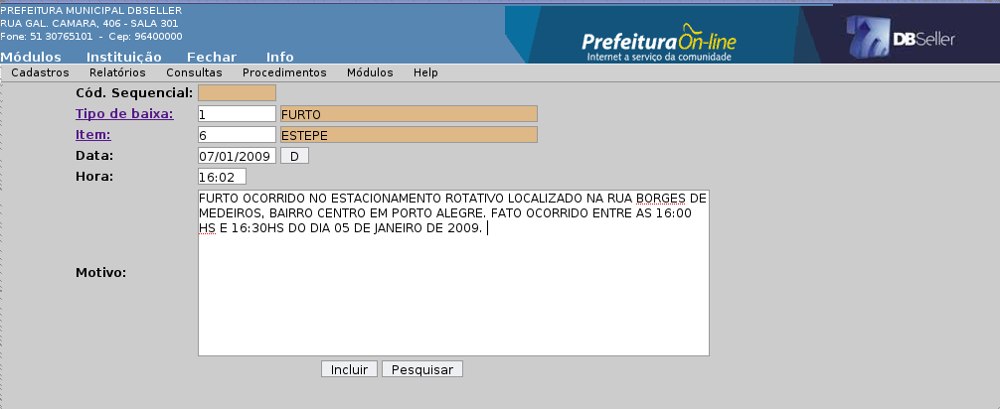
figura
46
O processo encerra-se clicando no botão incluir.
A alteração será possível atraves do sub-menu alteração, onde os mesmos campos da tela de inclusão serão disponibilizados para o usuário alterar conforme necessário.
A exclusão será possível clicando no sub-menu exclusão.
|
DBSeller Serviços de Informática Ltda. – www.dbseller.com.br Rua General Câmara, 406/301 – Porto Alegre – Fone: (51) 3028-9170 |
versão 2.1.93 |